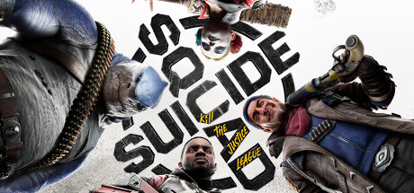
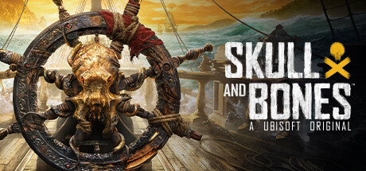
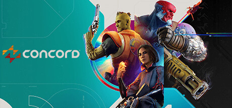
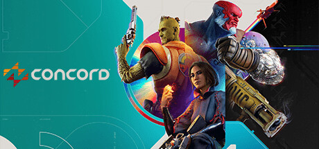

Noticias

1. Suicide Squad: Kill the Justice League
Estreno: 30 de enero del 2024
Pc, Ps5, Xbox series X|S
Era indispensable empezar esta lista hablando de Suicide Squad: Kill the Justice League por motivos evidentes: no es
solo que el juego haya tenido unas críticas más bien regulares en Metacritic, sino que ha supuesto una ingente cantidad
de pérdidas para Warner Bros. Games. Tanto es así que se filtró hace tiempo que el juego sería completamente cancelado
en 2025 y dejaría de recibir actualizaciones con contenidos nuevos dentro de poco.

2. Skull and Bones
Estreno: 16 de febrero del 2024
Pc, Ps5, Xbox series X|S
Skull and Bones podría considerarse como otro de los grandes batacazos del año por el contraste que hay entre el dineral
que ha costado su desarrollo y la poca repercusión que generó en su lanzamiento a nivel mediático. Es cierto
que es un juego que tiene bastante potencial, pero no parece que Ubisoft haya conseguido redimirse
todavía con él.
 3. Hellblade II
Estreno: 21 de mayo del 2024
Pc, Xbox series X|S
Jamás pensé que escribiría esto que voy a poner a continuación: Hellblade 2 podría considerarse como uno de los grandes
fracasos de 2024. Al menos, en cuanto a popularidad se refiere, dado que el juego tiene calidad de sobra cómo para dar
un paso al frente en forma de una secuela que expande en muchos sentidos varios aspectos planteados por el primer juego
de 2017.

4. Concord
Estreno: 18 de juelio del 2024
PS5
Mientras Concord se hunde y fracasa en Steam, analistas estiman que el exclusivo de PlayStation ha vendido solo 25.000
unidades y analizan las razones de su fracaso.
Quien ha jugado a Concord coincide en que no es un videojuego tan malo para tener unos jugadores tan bajos, pero sí que
hay una serie de razones a analizar para comprender por qué el juego como servicio de PlayStation había fracasado desde
el estreno de la beta abierta, una que apenas reunió a 2.500 jugadores en Steam.
3. Hellblade II
Estreno: 21 de mayo del 2024
Pc, Xbox series X|S
Jamás pensé que escribiría esto que voy a poner a continuación: Hellblade 2 podría considerarse como uno de los grandes
fracasos de 2024. Al menos, en cuanto a popularidad se refiere, dado que el juego tiene calidad de sobra cómo para dar
un paso al frente en forma de una secuela que expande en muchos sentidos varios aspectos planteados por el primer juego
de 2017.

4. Concord
Estreno: 18 de juelio del 2024
PS5
Mientras Concord se hunde y fracasa en Steam, analistas estiman que el exclusivo de PlayStation ha vendido solo 25.000
unidades y analizan las razones de su fracaso.
Quien ha jugado a Concord coincide en que no es un videojuego tan malo para tener unos jugadores tan bajos, pero sí que
hay una serie de razones a analizar para comprender por qué el juego como servicio de PlayStation había fracasado desde
el estreno de la beta abierta, una que apenas reunió a 2.500 jugadores en Steam.